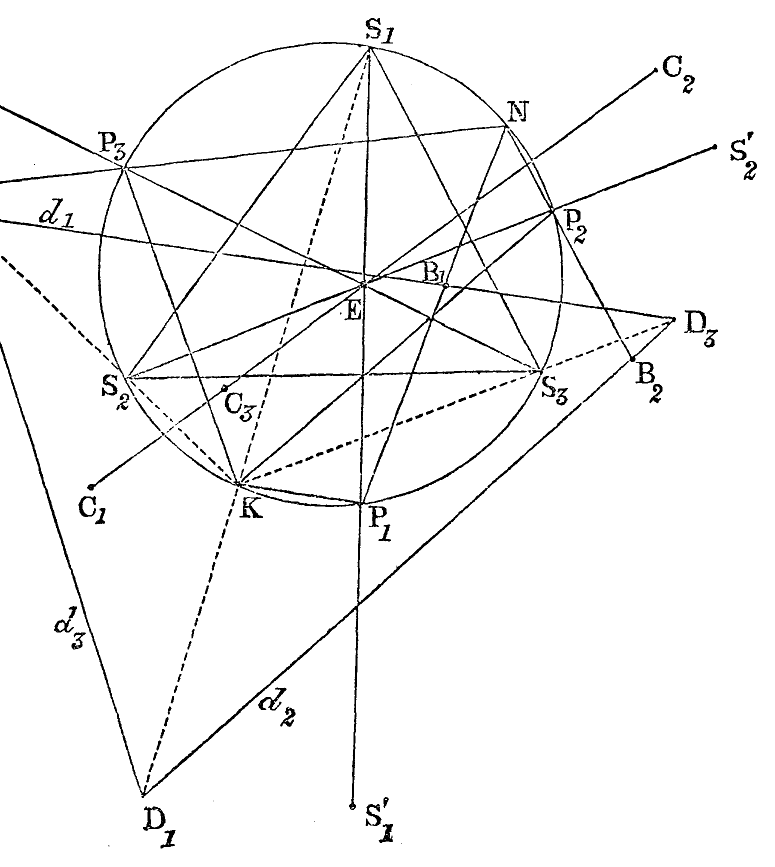

Supplementary Chapter, Section IV: General Theory of a System of Three Similar Figures¶
John Casey — Supplementary Chapter on the Recent Elementary Geometry of the Triangle (5th ed., 1888, pp. 189–194)
f. 0215 · p. 189
SECTION IV.¶
GENERAL THEORY OF A SYSTEM OF THREE SIMILAR FIGURES.¶
Definitions (f. ``0215``). Let $F_1, F_2, F_3$ be three plane figures directly similar to one another in the same plane. Taking the three figures in pairs $(F_2, F_3), (F_3, F_1), (F_1, F_2)$, they have three pairwise double points $S_1, S_2, S_3$ (called the Centres of Similitude of the system), and the triangle $\triangle S_1 S_2 S_3$ is called the Triangle of Similitude, while its circumcircle $(S_1 S_2 S_3)$ is the Circle of Similitude of the three figures.
When three homologous lines $d_1, d_2, d_3$ (forming $\triangle D_1 D_2 D_3$) vary subject to similarity, there exist three Invariable Points $(A'', B'', C'')$, Adjoint Points, and a Director Point governing the locus of their symmedian and circumcircle invariants.
f. 0216 · p. 190
Dem.—Let $d_1, d_2, d_3$ be three homologous lines forming $\triangle D_1 D_2 D_3$. By hypothesis of direct similarity across $S_1, S_2, S_3$,
$$ \frac{(S_1, d_2)}{(S_1, d_3)} = \frac{a_2}{a_3}, \qquad \frac{(S_2, d_3)}{(S_2, d_1)} = \frac{a_3}{a_1}, \qquad \frac{(S_3, d_1)}{(S_3, d_2)} = \frac{a_1}{a_2}. $$
Hence the lines $S_1 D_1, S_2 D_2, S_3 D_3$ co-intersect in a point $K$ whose perpendicular distances from $d_1, d_2, d_3$ are proportional to $a_1, a_2, a_3$! Because $\triangle D_1 D_2 D_3$ is given in species, its angles are constant and equal to the supplements of those subtended at $S_1, S_2, S_3$; therefore the angles $\angle S_1 K S_2, \angle S_2 K S_3, \angle S_3 K S_1$ are constant, proving that $K$ moves continuously along the circumcircle $(S_1 S_2 S_3)$. Q.E.D.


f. 0219 · p. 193
Invariable Triangle & Minimum Area Configuration (ff. ``0217–0220``). Every triad of homologous points $(P_1, P_2, P_3)$ collinear with the invariant directions sweeps circles concentric with or orthogonal to the Circle of Similitude; as $\triangle D_1 D_2 D_3$ rotates about its invariable points, its area reaches a unique minimum directly governing the Brocard configuration treated in Section V.